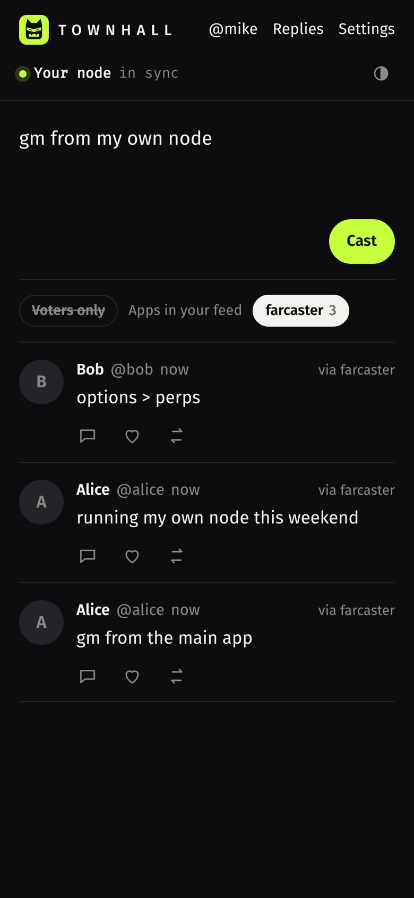

Your own Farcaster client and node, in three commands.
A Snapchain read node on a server you control, and a client that reads from it and posts with its own key. No API keys from anyone. This page explains every piece as you go, so at the end you know how Farcaster actually works.

Quickstart
From your computer, with a Hetzner Cloud API token:
curl -fsSL https://raw.githubusercontent.com/lexicon179/townhall/main/install/provision.sh | HCLOUD_TOKEN=your_token bashIt prints your server's IP. Then:
ssh root@YOUR_IP 'curl -fsSL https://raw.githubusercontent.com/lexicon179/townhall/main/install/node.sh | bash'ssh root@YOUR_IP 'curl -fsSL https://raw.githubusercontent.com/lexicon179/townhall/main/install/client.sh | bash'Open the https://…sslip.io address the last command prints. Your node needs a few hours to sync; the client shows its progress in the top bar.
Prefer to read before you run? Every script is short and commented: install/. The client is built from source on your server, so what runs is what is in the repo.
What you get
- A read node. A full, verified copy of every cast, reaction, follow and profile on Farcaster, kept in sync with the network. Anyone can run one.
- A client. Home feed of the people you follow, profiles, threads, posting, replies, likes, recasts, follows. It also shows which app signed each cast and lets you hide or show casts by app.
- Your own app key. The client signs with a key that belongs to you and that you added to your account yourself. Nobody in the middle can post for you, hide your feed or block your writes, as long as your node is up.
Before you start
| You need | Why | How |
|---|---|---|
| A server with 4 vCPU, 16 GB RAM, 2 TB disk | Snapchain's documented requirements. The disk holds the whole network. | Step 0 creates one on Hetzner. Create an account, a project, then Security → API tokens → Generate with Read & Write. |
| A Farcaster test account that has storage, and its recovery phrase | Only to post. The phrase signs one KEY_ADD message that adds your app key. No gas. Read-only mode needs just a username. | In the Farcaster app settings, under Advanced → Recovery phrase. Check its storage on your node: /v1/storageLimitsByFid?fid=…. |
A terminal with curl, jq, ssh | To run the three commands. | macOS: brew install jq. Ubuntu: sudo apt install jq. |
Hands-on time is about 10 minutes. The node then syncs on its own for a few hours.
Step 0 · Get a server
curl -fsSL https://raw.githubusercontent.com/lexicon179/townhall/main/install/provision.sh | HCLOUD_TOKEN=your_token bashWhat it does, in order:
- Uses your SSH key (
~/.ssh/id_ed25519.pub, created if missing) and uploads it to Hetzner, so only you can log in. - Picks the cheapest server type in the location with at least 4 vCPU and 16 GB RAM.
- Creates a firewall that only opens SSH (22), HTTP/HTTPS for your client (80, 443) and UDP 3382, the port Snapchain nodes use to talk to each other.
- Creates the server with Ubuntu 24.04 and attaches a 2,000 GB volume for the node's data.
- Waits until it can SSH in, then prints the next two commands with your IP filled in.
Options: LOCATION=nbg1, SERVER_TYPE=…, VOLUME_GB=…. A server is billed while it exists, see cost & cleanup.
Step 1 · Run a Snapchain read node
ssh root@YOUR_IP 'curl -fsSL https://raw.githubusercontent.com/lexicon179/townhall/main/install/node.sh | bash'- Installs Docker.
- Finds the disk with the most free space (your 2 TB volume) and puts the node there.
- Downloads the official
docker-compose.mainnet.ymlandvalidators.tomlfrom the latest Snapchain release, unchanged. That file already configures a read node (read_node = true). - Starts the node. It first downloads a snapshot of the network, then replays recent blocks from peers until it catches up.
- Starts a small snapshot guard. On first start the node keeps every downloaded snapshot file until the very end, which is why the docs ask for 2 TB. The guard deletes each file as soon as the node has finished with it, so the first sync should peak around 850 GB instead of about 1.5 TB (our estimate from the snapshot sizes in October 2026). It stops by itself when the sync is done.
- Installs
townhall-status, a one-word command that shows how far behind each shard is.
It prints one line per shard with its height and how many blocks it is behind. The node is in sync when every shard is within a few blocks.
The node answers on port 3381 with Snapchain's HTTP API. Try it on the server: curl -s localhost:3381/v1/castsByFid?fid=1 | jq '.messages[0].data.castAddBody.text'
Step 2 · Create your client
ssh root@YOUR_IP 'curl -fsSL https://raw.githubusercontent.com/lexicon179/townhall/main/install/client.sh | bash'- Clones this repository and builds the client inside a throwaway Node container.
- Starts Caddy, which gets an HTTPS certificate for
YOUR-IP.sslip.io(a free wildcard DNS name that points at your IP; setDOMAIN=your.domainto use your own). - Serves the client and forwards
/v1/*to your node. The browser only ever talks to your server: same origin, no CORS, no third-party API.
Re-run the same command any time to update the client.
Using the client
Read-only
Type your username. The client resolves it to your FID on your node, loads who you follow, and builds your feed from their latest casts. Nothing is signed and nothing is sent anywhere.
Connect your account (to post)
- Paste your recovery phrase and press Check. The page derives your custody address from the phrase and reads your FID from the IdRegistry contract on Optimism. Nothing is sent yet.
- Press Add app key. The page generates a new Ed25519 keypair (your app key) and reads your current key nonce from your node (
/v1/signersByFid→currentUserNonce). Your custody account then signs two EIP-712 messages: a SignedKeyRequest (which app asks for the key, here your own FID) and a KeyAdd (the key, what it may sign, how long it lives, the next nonce). - It goes to your node as a message. Both signatures ride in a
KEY_ADDmessage whose envelope is signed by the new key itself, proof that you hold it. Your node checks it and relays it like a cast. About a second later the key is active. The page clears the phrase and keeps only the app key in this browser.
Post, reply, like, recast, follow
Each action builds a protocol message, signs it with your app key in the browser, and submits the raw bytes to your node. Mentions like @alice are resolved on your node and stored as protocol mentions.
Include or exclude casts by app
Every cast is signed by an app key, and every app key records which app requested it (the app's own FID). The client looks this up on your node for each author and shows it as via farcaster, via own key and so on. Tap an app in the bar above the feed to hide or show its casts. Your choice is remembered in this browser.
Voters only
People who accepted the social contract in the Farcaster network vote hold a VOTE NFT on Base whose token id is their FID (contract). The client asks Base directly, ownerOf(fid), and marks those authors voted. Turn on Voters only for a feed of people who showed up. Declining minted nothing, so only "yes" is visible onchain.
Replies, from mutuals
Replies collects replies to your recent casts and casts that mention you, all read from your node. By default it shows only mutuals, people you follow who follow you back. Switch to everyone when you want the full picture.
On your phone
Open your client address and choose Add to Home Screen (Safari: Share menu; Chrome: ⋮ menu). It opens full screen like an app, still talking only to your node.
Concepts, in plain words
- FID
- Your Farcaster ID, a number. It lives in the
IdRegistrycontract on Optimism. Usernames, keys and every message point to it. - Custody address and recovery phrase
- The Ethereum account that owns your FID. Your recovery phrase is the private key to it. Whoever has the phrase owns the account, which is why it is only used once here, locally, to add an app key.
- App keys (signers)
- Ed25519 keys that sign your messages. You can have many, one per app. This client adds a gasless key: a
KEY_ADDmessage authorized by your custody address, with no transaction. Three rules come with it. Scopes: the key lists the message types it may sign (here casts, reactions, follows, profile), and can never add or remove other keys. Sliding TTL: it expires after a period of no use (up to 90 days; this client asks for the maximum), and every message it signs resets the clock. Nonces: eachKEY_ADDcarries a number higher than the last one for your FID, so an old authorization can't be replayed. - The older way still works: calling
KeyGateway.addon Optimism, with a transaction and gas. Those onchain keys have no scopes or TTL. Your node lists both kinds at/v1/signersByFid. - Messages
- Everything you do is a small signed message:
CAST_ADD,CAST_REMOVE,REACTION_ADD(like or recast),LINK_ADD(follow),USER_DATA_ADD(profile). Each has a BLAKE3 hash and an Ed25519 signature, so any node can check it without trusting anyone. - Snapchain
- The network that orders and stores those messages. Validators run consensus and produce blocks. Messages are split across shards by FID; shard 0 orders the others.
- Read nodes vs validators
- A read node follows the chain, verifies every block's signatures from the validators, stores the full state and serves the API. It does not vote and keeps no mempool. Anyone can run one; validators are a fixed set of operators.
- Storage
- Storage is rent, paid onchain on Optimism (the
StorageRegistrycontract) and counted in units. Each unit expires after a period, so rent is renewed, not bought once. A unit sets a separate limit per kind of message (casts, reactions, follows, profile data). Go over a limit and nothing fails: your oldest message of that kind is pruned to make room, which suits a timeline but means a very active account can lose old follows or casts. If your rent runs out, the network rejects new messages from you. This is how Snapchain keeps its state bounded and stops spam without per-message fees. - Check yours on your node:
/v1/storageLimitsByFid?fid=YOUR_FIDlists each store'slimitandused, plus your units and when they expire. Rent and key events are onchain events your node indexes too:/v1/onChainEventsByFid?fid=YOUR_FID&event_type=EVENT_TYPE_STORAGE_RENT. - Usernames (fnames)
- Human-readable names mapped to FIDs by a signed proof. Your node answers
/v1/userNameProofByName?name=…. - Clients
- Apps are just programs that hold an app key for you and read from some node. The Farcaster app is one; this is another. They all see the same network.
How a cast travels
- You press Cast. The browser builds a
CAST_ADDmessage with your FID, the text and mentions, hashes it, signs it with your app key, and encodes it as protobuf. - It is posted to
/v1/submitMessageon your server, which Caddy forwards to your read node. - Your node validates it: FID exists, the key is active for that FID, hash and signature are correct, you have storage. If anything is wrong it answers with an error right away.
- A read node keeps no mempool, so it relays the valid message to the validators over gossip (the
mempooltopic). - A validator includes it in a block. Your node syncs that block and the cast shows up in your feed, usually within seconds.
submitMessage. A validator puts the message in its own mempool; a read node keeps no mempool, so it validates the message, gossips it on the mempool topic, and keeps nothing. That is why a 200 means "valid and relayed", not "in a block yet": if the gossip is lost under heavy load, resubmit. To confirm inclusion, read the message back from your node. Key messages (KEY_ADD, KEY_REMOVE) are routed to shard 0; casts, reactions and follows go to a message shard picked from your FID. Source: Validators vs. read nodes.Security model
- Treat a recovery phrase like
rm -rf. It controls the whole account. Test this tutorial with a test account. In general, only paste a phrase into software you run yourself or from developers you trust, and prefer delegated sign-in (an app that holds your account approves a key for you) whenever it is available. - Your recovery phrase never leaves the page. It is used in your browser to sign the two key authorizations, then cleared. It is not sent to your server or stored. The only thing your node receives is the signed
KEY_ADD. - The app key lives in this browser (local storage). Its scopes let it sign casts, reactions, follows and profile changes, never move your FID or add keys. To stop, open Settings → Revoke this key on the network: the key signs its own
KEY_REMOVE, no recovery phrase needed. If you lose the device, revoke from your custody address, or just stop: an unused key expires on its own when its TTL runs out. - Your node's API is public through your client address: anyone can read through it (it is public data anyway) and submit validly signed messages, which your node only relays.
Troubleshooting
| You see | Do this |
|---|---|
| "node unreachable" in the client | The node is still downloading the snapshot. townhall-status and the node logs show progress. |
| "blocks behind" stays high for hours | Check UDP 3382 is open in your firewall and the disk is not full (df -h). |
| The client address doesn't load over HTTPS | Ports 80 and 443 must be open for the certificate. If sslip.io is rate limited, point your own domain at the IP and re-run step 2 with DOMAIN=your.domain. |
| "nonce is not greater than stored nonce" | Another key was added or removed for your FID in the meantime. Press Add app key again; it re-reads the nonce. |
| Casts rejected after adding a key | Your FID may have no storage. Check /v1/storageLimitsByFid?fid=YOUR_FID on your node. |
| "invalid signer" when posting | Your node hasn't processed the key event yet, usually because it is still syncing. Wait until it is in sync. |
| "volumes size limit exceeded" in step 0 | New Hetzner accounts have a cap on total volume size. Step 0 then attaches the largest volume allowed and tells you. To grow it later, request a higher limit in the Hetzner console (Limits) and resize the volume. |
| "error during placement" in step 0 | That location is out of the server type for now. Step 0 tries the other EU locations automatically. |
| Messages rejected for storage | Your FID has no storage units left. Rent storage in any Farcaster app. |
Cost & cleanup
Most of the cost is the 2 TB disk. Hetzner Cloud bills by the hour. With the cheapest 4 vCPU / 16 GB server plus a 2 TB volume, that was about €6 a day (≈€180 a month, ≈€45 for a one-week test) when this was written; check current prices in the Hetzner console. A dedicated server with large disks is cheaper if you keep the node running. Adding the app key costs nothing.
To stop paying: delete the server and the volume in the Hetzner console. Your Farcaster account is unaffected; to also revoke the app key, see security.